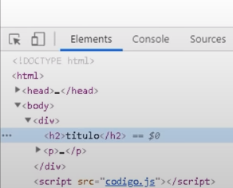
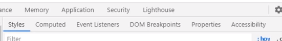
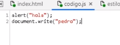
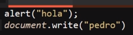

Google Developer Tools
Se tratan de todas aquellas herramientas que ofrece Gooogle Chrome para debugiar (encontrar errores) en JavaScrip, las cuales permiten conocer todo el uso de los recursos, el manejo de la memoria, encontrar errores más facil entre otras utilidades.
Para esto las herramientas de desarrollador de google nos permiten acceder a una serie de pestañas, cada una de estas pestañas contiene una o más herramientas con dibersas funcionalidades, al hacer un crrecto uso de cada una de estas se puede optimizar el trabaja y prncipalmete se puede optimizar las labores de de debugging del codigo de la paguina web, así como trabajar en sus recursos o rendimiento.
Nota: Tambien es posible realizar una busqueda de elemento o datos, esto al undir los botones "Ctrl + F", de ese modo se despliegara un cuadro de texto que permitira buscar elementos, el cuales busque dependera de cual es la pestaña de herramientas seleccionada al momento de undidos los botones, por ejemplo en "elements" se puede buscar elementos en base a su selector, xPath o su string, por otro lado en la etiqueta "console" se puede buscar datos Strings en los registros de esta.
Pestañas de las Herramientas de Desarrollador
Elements
-
Se trata de la pestaña por defecto al abrir las herramientas de desarrollador, permite visualizar el codigo HTML, así com tambien seleccionar y interactuar con cada uno de los elementos HTML de la paguina.

Ineractuar con un Doble Click
Para selecionar una interacción con los elementos HTML se puede hacer de barias formas, la primera es hacer "click derecho" el elemento deseado, de ese modo se desplegara un menu con las siguientes interacciones:
Editar el texto del elemento
Editar la etiqueta del elemento seleccionado
Duplicar el elemento
Borrar el elemento
-
Ofrese diferentes formas de copiar el elemento:
Copiar con normalidad (duplicar el elemento)
Copiar "outerHTML" (copia todo el codigo HTML listo para ser pegado en otro ducmento.)
Copiar el selector CSS (genera la estructura de selectores adecuada para modificar el elemento, listo para pegarla en un documento CSS)
Copiar la ruta de JavaScrip (Genera la estructura "querySelector adecuada para seleccionar el elemento, listo para pegarlos en el documento JavaScrip")
Copiar los estilos del elemento (literalmete copia cada una de las propiedades CSS y sus valores listos para pegarlos en un documento CSS)
Copiar el Xpath del elemento (se trata de la ruta de elementos que alojan el elemento actual, ejemplo: "/html/body/aside")
Copiar el xpath completo, (se trata de basicamete lo mismo qu el xpath comun, solo que en ciertos casos da más información)
Cortar y pegar el elemento
Ocultar el elemento
Forzar el esta del elemento (:active :hover :focus :visited :focus-visible docus-within)
Fecha de Interrupción, (tambien llamado "Break on")
Expandir de forma recrsiva
Contraer elementos secundarios (elementos hijos)
Tomar una captura de pantalla del nodo
Desplazar la documeto hasta que el elemento sea visible (permite encontrarlo en la visualización)
Enfocar el elemento
Interactuar con los menus secundarios
Otra forma de interacutar con los elementos es usando los menus secundarios de la herramienta, estos se encuentran debajo de la representación del codigo HTML de la paguina, y permiten tener un acceso más directo a las diferentes opciones que presentan estas herramientas.

-
Menu Estilos
Este menu surge al selecionar un elemento, se despliega con todos los estilos CSS que posea este, y permite modificarlos libremente, forzar el estado (con el boton ":hov"), añadir clases (con el boton ".cls"), e incluso permite filtrar los estilos, entre muchas más opciones.
p>Nota: al clickear sobre el recuadro de color de una propiedad de color se despliaga el menu de selección de colores, el boton con simbolo de gotero permite selecionar el colo de un pixel en espesifico de la paguina, retornando el codigo exadecimal de este, de ese modo se puede obtener el color de por ejemplo imagenes para usarla en la paguina.
-
Menu Computed (Calculados)
Permite ver el valor de las propiedades de dimenciones del elemento, "padding", "margin" y "Border", así como tambien modificar el valor de estos, para probar con diferentes dimenciones de una forma más visual.
-
Menu de Objetos de Escucha de Eventos (Event Listeners)
Este menu se utiliza para trabajar con los eventos JavaScrip, se profundizara en esto en su respectivo apartado.
-
Menu Interrupciones del DOM
Este menu se utiliza para trabajar con recursos JavaScrip más avanzados, se profundizara en esto en su respectivo apartado.
-
Menu Propedades
Enlista todas las propiedades poseaidas por el elemento seleccionado, tambien se puede lograr exactamente lo mismo escribiendo "$0" desde la pestaña de consola
-
Menu Accesibilidad
Este menu no es usado en la gran mayoria de los casos, por tanto no es plantedo dentro del curso.
Nota: Los cambios realizados en la paguina desde la pestaña "Elements" pueden ser desechos con las taclas "Ctrl + Z", a su vez los cambios puede volver a ser realizados con las teclas "Ctrl + Y"
Cosole
-
Esta pestaña ya fue explicada en detale en el nivel 1 del curso, sin embargo aqui se define los diferentes niveles filtrado de la consola:
Se tratan de filtros que se aplican a los elementos guardados en consola, los niveles de filtrado son:
All: Muestra todos los resultados de la consola
Errors: Unicamete muestra los resultados de console.errors
Warnings: Unicamente muestra los resultados de console.warninig
Info: Unicamente muestra los resultados de console.info
Logs: Unicamente muestra los resultados de console.warninig
Sourses (Fuentes)
-
Esta pestaña esta enfocada en trabajar directamente con cada uno de los archivos que estan dentro del directorio del documento en cuestión, esta pestaña permite acceder a los archivos, y modificarlos directamente desde el navegador, permitiendo de este modo experimentar con el codigo de los docuemtos directamente desde el navegador.
Cambio Realizado

Resultado

Como se puede apreciar en este ejemplo los cambios realizados desde la pestaña "sourses" de las herramientas del navegador generaron cambios en el codigo del elemento.
Nota: para guardar los cambios efectuados se precionan los botones "Ctrl + S"
Nota: No todos los navegadore trabajan igual, por ejemplo Opera pese a estar basada en Crhome no permite modificar los documentos desde esta pestaña.
Esta pestaña tambien cuenta con la capacidad de aplicar las siguientes herramientas:
Watch (Supervisión)
Scope (Alance)
Breakpoints (Puntos de Interrupción)
- XHR/fetch Breakpoints (Interrupción de Recuperación)
DOM Breakpoints (Interrupciones del DOM)
Global Listeners (Objetos de Escucha Globales)
Event Listener Breakpoints (Interrupciones del Objeto de Escucha de Eventos)
Tambien al dar clic derecho con el raton sobre alguna de las carpetas o de los documentos del diretorio se desplegaran interaciones extra que se pueden aplicar a los documentos, las cuales pueden bariar dependiendo del navegador.
En la esquina superior izquierda se enceuentran una serie de pestañas, cada una permite realizar una función en concreto:
Pagina: Permite interactuar con las carpetas y docuemtos del directario
FileSystem: Permite inportar carpetas o archivos propios directamente desde el equipo
-
Snippets: Se trata de fracmentos de codigo que se pueden guardar para ejecutarlos cuando se desee, ya que al ingresar un codigo en la consola del navegador este se perdera al refrescar la paguina, los fracmentos permten crear y guardar un codigo para poder ejecutarlo cuando sea necesario sin volver a escribirlo desde 0, convirtiendose en una erramienta muy util a la hora de ejecutar codigos muy largos repetidas veces en la paguina.
Nota: para ejecutar el "Snippet" este tiene que ser seleccionado y luego se unde los botones "Ctrl + Enter"
Nota: En google los Snippet se guardan para futuras ocaiones, aún si se cierra el docuemto el "Snippet" permanecera en memoria para un futuro, del mismo modo haciendo clic dercho junto con barias alternativas, se puede guardar el "Snippet" como un archivo en el equipo.
Network (Red)
-
Se trata de una pestaña enfocada en analizar el comportamiento del codigo a la hora de cargar la paguina, esta pestaña brinda todo tipo de información sobre la carga de los diferentes archivos o elementos de esta, información como nombre, tipo, elemento que lo inicializa, tamaño, tiempo que demoro en cargar etc.
Esta pestaña incluso brinda información como el numero de solicitudes realizadas, cantidad de datos transmitidos, peso de los archivos, tiempo total de la carga de la paguina y tiempo que tardo el DOM en cargar, en pocas palabras en esta pestaña se enceuntra toda la información ecesaria para analizar el rendimiento del codigo en profundidad, así como la secuanci de esta.
En la parte superior de la pestaña se encuentra una seción dedicada particularmente a las numerosas formas que se tienen de filtrar los archivos del analisis, permitiendo de ese modo ubicar cualquier archivo de interes, sin importar el tipo de este.
A su vez al hacer clic derecho sobre un elemento se habre un menu con multiples opciones, entre las cuales se encuentran recursos muy utilies a la hora de trabajar:
Block Request URL: Permite bloquear las solicitudes del elemento selecionado, por lo tanto se inabilita la carga de este
Block request Domain:Esta opción bloquea el acceso de los elementos a su dominio en la web, por lo tanto se inabilita la conexión de los elementos con su servidor
Opciones de Copiado: Existen multipls formas de copiar los diferentes elementos cargados por una paguina, sin embargo no es una opción particularmente util en estos casos así que no se profundizara sobre esto /p>
Guardar: Se puede guardar en el equipo los diferentes elementos cargados por la paguina
Clear Browser cache: Permite borrar los datos guardados en la cache del equipo que hayan sido cargados por este elemento
Clear Browser cookies: Permite borrar los datos guardados en las cookies del equipo que hayan sido cargados por este elemento
Nota: Con click derecho entre otras se encuentra la opción de "sort By" (ordenar) la cual permite organuizar los elementos de carga de la forma que se considere más conbeniente.
Nota: Tambien se encuentra la opción de "header options" la cual permite seleccionar que datos de los elementos se mostraran en el analisis, de ese modo se puede contemplar aún más datos de los que se brinda por defecto.
TimeLine / Performance
-
Esta pestaña esta enfocada espesificamente en realizar un analisis en profundidad del rendimiento de la paguina en cuanto a recursos se refiere, cada aspecto por irelevante que parezca es captado, plasmado y espesificado en sta pestaña, por lo tanto esta pestaña permite al desarrollador concer con presición cuantos recursos consume cada elemento.
Para realizar un analisis tan preciso esta pestaña lo que haces es "grabar" la ejecución de todos los recursos utilizados por la paguina durante el periodo de tiempo indicado, una vez concluida la grabación todos los datos recolectados son plasmados en una serie de graficos y mostrados al programador, para que se este modo se pueda analizar con precisión.
Para grabar los procesos de la paguina esta pestaña cuanta con dos opciones:
-
Start Recording (Iniciar Grabación): Esta opción permite iniciar la grabación desde el momento en el que se pulse el boton hasta que esta sea detenida
-
Record the Page Load (Recargar y registrar): Esta opción a la vez que inicia la grabación (registro) del consumo de recursos de la paguina reinicia la carga de esta, de ese modo se puede registrar en datalle todo el proceso de carga de la paguina desde cero (0).
Los registros de recursos generados por esta pestaña son tan detallados que incluso contienen la onformación de "Network (red)", sin embargo en esta ocación los datos son plasmados de una forma diferente, para que complemte la demás información transmitida.
En si los datos plasmados en estos registros es información muy espesifica, por lo tanto debido a lo abanzado de estos y lo extenso no son contenplados por el curso más alla de lo ya dicho.
Nota: Ya que profundizar en los datos mostrados por esta pestaña es complejo por lo general este se utiliza unicamente en aquellos casos en los que la paguina sufra retrasos al cargar, no se complete la carga de un recurso o algun tipo de problema que amerite un analisis detallado.
Nota: Para un analisis más simple con las herramientas de desarrollador habiertas se unde los botones "Ctrol + Shift + P", esto habre un cuadro de busqueda de herramientas, en el cual se ingresa el nombre "Show Perfomance Monitor", esto habre un cuadro en la parte inferior en el que se plasma una grafica a tiempo real del consumo de recursos de la paguina, es un analisis mucho más superficial que una grabación de recursos, pero para es más que sufucuente para la mayoria de los casos.